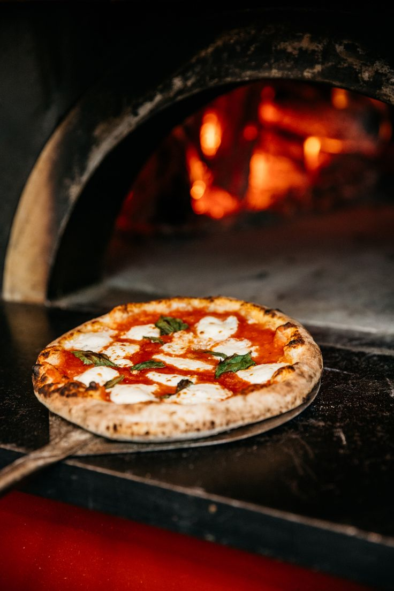

Massa de verdade
Fermentação lenta, feita todos os dias. Nada de massa pronta.

Tudo começou no quintal da nona Assunta, num forno de tijolos que ela mesma ajudou a construir. Aos domingos, a casa enchia de primos, tios e vizinhos, e a pizza saía até acabar a massa.
Hoje a Bella Forno mantém o jeito dela: massa feita todo dia, molho de tomate cozido devagar e uma mesa grande onde sempre cabe mais um.
Fermentação lenta, feita todos os dias. Nada de massa pronta.
Tomate, manjericão e queijos escolhidos com cuidado, sem pressa.
Um salão pensado para aniversários, almoços de domingo e grupos grandes.